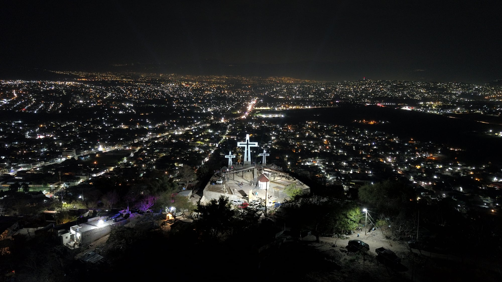

Cuidando Nuestro Entorno
Jornadas de reforestación y limpieza en los espacios públicos de Temixco.
Somos un grupo civil comprometidos con el desarrollo social, la participación ciudadana y el bienestar de las familias de Temixco.
Conoce nuestros proyectos Sobre nosotrosJornadas de reforestación y limpieza en los espacios públicos de Temixco.
Inspirados en la riqueza cultural y humana de Temixco — "lugar donde nace el agua" — trabajamos para que cada familia tenga oportunidades reales de progreso.

Promover el desarrollo integral de Temixco mediante acciones de apoyo social, participación ciudadana activa y proyectos comunitarios que fortalezcan el tejido social, la equidad y la calidad de vida de sus habitantes.
Ser un grupo civil de referencia en Temixco, reconocida por su transparencia, impacto medible y compromiso genuino con la transformación social sustentable de nuestra región morelense.
Cada proyecto nace de escuchar a la comunidad y responder a sus necesidades más urgentes, canalizándolos con las personas adecuadas para resolver su problemática.
Alfabetización, talleres educativos y becas para jóvenes de escasos recursos en las colonias de Temixco.

Jornadas de salud gratuitas, campañas de prevención y acceso a servicios médicos básicos para quienes más lo necesitan.

Reforestación, limpieza de espacios públicos y educación ambiental para preservar los recursos naturales de Morelos.

Capacitación laboral, emprendimiento y apoyo a pequeños negocios locales para fortalecer la economía familiar.
Espacios de encuentro, diálogo y acción colectiva para construir un Temixco mejor.
Encuentro abierto para discutir temas de interés comunitario, fortalecer la democracia local y construir propuestas desde la base.
Distribución de despensas, ropa y artículos de primera necesidad para familias vulnerables de todas las delegaciones.
Celebración cultural con música, danza, comida tradicional y actividades recreativas para toda la familia temixquense.
Atendemos las necesidades básicas de las familias más vulnerables de Temixco con programas que ofrece el gobierno local.
Apoyo con productos básicos para familias en situación vulnerable a bajo costo.
Distribución de calzado a bajo costo para quienes más lo necesitan.
Kit escolar completo para niños y jóvenes al inicio de cada ciclo educativo.
Apoyos diversos para las colonias de Temixco según la necesidad detectada.
Nuestro trabajo no se limita a la asistencia inmediata; construimos soluciones de largo plazo para Temixco.
Estrategia integral enfocada en mejorar infraestructura básica, servicios públicos y espacios recreativos en las colonias más necesitadas de Temixco, con enfoque participativo y transparente.
Alianzas estratégicas con gobierno local, empresas privadas y otras organizaciones civiles para maximizar el impacto de nuestras acciones y generar recursos sostenibles.
Talleres de convivencia, resolución pacífica de conflictos y formación de líderes comunitarios para construir una sociedad más unida, participativa y resiliente.